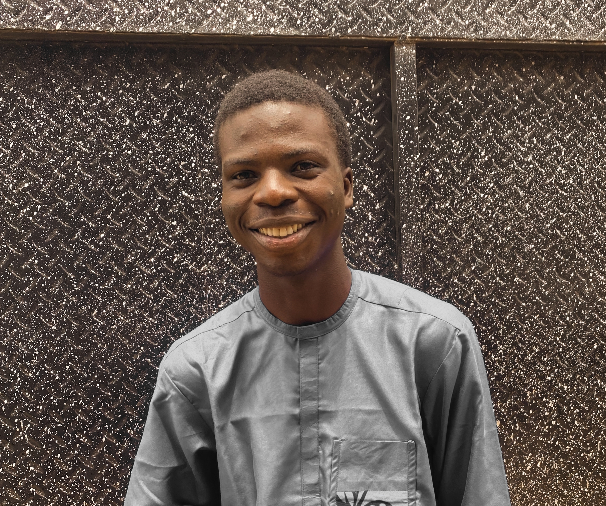

Machine Learning
Core workflows for preparing data, training models, and evaluating predictions.
MACHINE LEARNING · GENERATIVE AI
I'm Inioluwa Olufemi, a Computer Science student focused on machine learning, NLP, retrieval-augmented generation, and LLM-powered applications.

assets/profile.jpg
01 / ABOUT
I build practical AI systems using NLP, RAG, LLMs, and machine learning.
My focus is on turning information into useful experiences: retrieving relevant context, structuring data, designing prompts, and building applications that help people work with information more effectively.
I'm continuing to develop my foundations in machine learning and Generative AI, with an emphasis on understanding the problem, evaluating outputs, and explaining the decisions behind a system—not just making a demo work.
02 / SKILLS
My current areas of focus. This list describes my working toolkit, not a ranking of proficiency.
Core workflows for preparing data, training models, and evaluating predictions.
Applications that work with language, retrieve context, and generate useful responses.
Organising information so relevant passages can be found and supplied as context.
Connecting AI pipelines to usable interfaces and lightweight services.
03 / SELECTED PROJECTS
A selection of AI projects exploring retrieval, document understanding, and text classification.
Portfolio note: Demo links are provided where known. The GitHub links currently point to your profile; replace each with the exact repository URL when you have it ready.
04 / EXPERIENCE & LEARNING
My current path is focused on strengthening fundamentals through study, training, and practical projects.
Developing machine learning knowledge and applying concepts through hands-on practice.
Training in Generative AI concepts and application development.
Building a foundation in computing while developing practical AI projects alongside my studies.
05 / CONTACT
I'm open to connecting with AI builders, teams, and people working on useful machine learning and Generative AI applications.
Email me